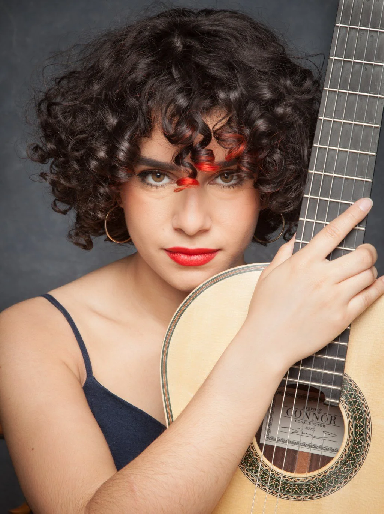

AL Plays
Marko Topchii was the first live guitarist I've ever
seen. To this day, I believe he is one of THE classical
guitarists of our time. That day he gave us heck of a
performance, with immaculate technique and loud,
flashy pieces. The one I still remember is Toccata
by Rodrigo. Even got an
autograph after the concert (not on sale). Overall he is a great
musician, but that day, as the first time I've ever heard guitar
live, it was a life-changing experience. If you get a chance,
go see him play.
My Video Recording (in terrible quality)
I didn't get a chace to see any other performers at the
Guitar society that year, but what I did see was the Candlelight
concert: Tribute to Hans Zimmer and Tribute to Joe Hisaishi. The
atmosphere is really charming, with all the candles and the acoustics, but also
the performers. Both concerts were string quartets,
and both were amazing. I love
both composers' music, but Hisaishi's tribute was really something else.
Insanely touching performances, though I might
be biased. If you're ever close to downtown Toronto, definitely
check them out. They also have many pop music tributes as well, but not a fan
of pop... at all.
My Video Recording
Gaëlle Solal is a French classical guitarist who kicked
off the Guitar Society's 2025-26 solo season. Her performance
wasn't just amazing, but truly spectacular.
Her program left me in amazement. From the weird/unconventional
techniques that she used and to the most interesting contemporary
repertoire I've ever heard, it was the best kickstart you
could ever ask for. Her performance showed me what contemporary
music can be, and I never regretted seeing her. Definitely
one hell of a guitarist to check out.
My Video Recording #1 & #2
Leonela Alejandro's performance will stay in my mind forever. Her tone was pure bliss - it felt so warm, so cozy. I fell in love with her double-top guitar; I didn't know guitars could sound that good. Besides that, her repertoire was also amazing. From pure jazz-fusion Appassionata to one of my favourite pieces that day, Pregunta, her performance hit every strand of my soul. She is the best and most touching guitarist I've seen live to date, and will definitely incorporate some of her pieces into my repertoire as well. I couldn't thank her enough for such a performance. She is a must-go-to-whenever-she's-live guitarist. Her performance was so great I didn't record anything that evening. Sometimes you really need to "live in the moment," and that night was no exception.
